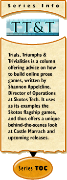

Trials, Triumphs & Trivialities #121:
Strategic Coda: The Web ConnectionMay 29, 2003 – Yesterday we launched beta tests of two new strategy games at Skotos, Space Federation and Queen's Necklace. It thus feels somewhat appropriate to, today, be writing this final ancillary article to my five-month long series on strategic games. To date I've largely talked about strategic games as they traditionally exist, in the tabletop medium. I did write one article on how web games are put together, and I've made the occasional brief aside beyond that, but otherwise I haven't gone into too much depth on the topic, though it's the one that interests me the most. Today I plan to return to web games one last time, to account for that lack. I'll answer the question, "How can you take the strategic ideas that I've imparted to date and put them into use in the online medium?" The answer to this, I think centers around two main points. You must account for the different dynamics of people on the Internet, and should also think about what it means to have a computer moderating your game. The Power of PeopleThe biggest power of the online medium is, I think, the fact that it contains lots of people. Thousands at a community like Skotos. Many, many millions in the net as a whole. This allows you to build very special interest games — and to expect to find enough people out there interested in said games. These games might never be huge as a result, but still you can really express your creativity in a way that would not have been possible in the "real" world — and find people to enjoy that creativity. In addition, you can build much bigger games. In the real world, strategy games that can be played by more than six people are uncommon, while those that can be played by more than eight people are quite rare. In the online world, we'd consider those small games. Our own Galactic Emperor: Hegemony supports 12 people at a time, though it could easily be larger. Imperial Wars, a recently released game by some of our friends, supports 16. Meanwhile our newest addition, Space Federation, can literally host thousands of simultaneous players (at this very moment, as I write, there are 54 players simultaneously logged on to the Space Federation server). The number of players possible in online/web games are so high that game designers need new means to figure out who a player should interact with. And, Space Federation steps up to that challenge, allowing you to interact with people on either a per-sector or similar-power basis. However, at the same time that we have unprecedented numbers of people available to play on the Internet, the dynamics of how those people interact with each other — and with your game — is very different from traditional games. To be specific, the differing dynamics of people will cause you to run into problems in two major areas: timing and dropouts. People: Timing & Short-Term GamesThe issues of timing vary quite a bit based on how many people you have in your game. At the lower-player numbers there are short-term games which attempt to model tabletop board games fairly precisely, including requiring all the players to be online at the same time. This is what our partners, Days of Wonder, do, when adapting their games Gang of Four and Queen's Necklace. These games only needs 3 or 4 people; it's a lot easier to find that many people interested to play at one time, and since the games are less than an hour long, it's easier to keep them online for the duration of a game. The biggest timing frustration in small, short-term games is that caused by slow players. Perhaps they're thinking, perhaps their Internet connection is slow, and perhaps they're trying to play the game in between office visits by their boss. In any case you usually only see a paused screen, waiting for their input. In these types of games, where you only have a couple of players, and each player is moving in carefully defined turns which require everyone else to wait, I strong suggest you make turns more player independent; in other words, figure out ways that not everyone has to wait. Different games approach this problem in different ways. Add Game Timers. Some games acknowledge the problem simply by putting timers on each player choice. Cosmic Encounter Online, a newly released version of the classic board game, takes this tact. For every choice, a default option is presented. When the choice is presented to the player, a timer starts ticking away. If the player doesn't make a choice by the time the timer is done (usually no more than 15 seconds), the default selection is taken. Allow Simultaneous Turns. Another option that I've seen used much less often is to make turns simultaneous. Whenever I look at adapting a board game to online play, I try and figure out if this type of simultaneous play is possible. Queen's Necklace is actually fortunate in that one of the main phases of the game is already simultaneous. Three times during each game the players choose gems that they're going to sell. They each make their choices at the same time, then reveal all of those choices together. This is precisely the sort of thing that speeds up online play, and makes it less frustrating. If you've got a short-term game that doesn't already have this type of play, I'd suggest figuring out how to add it in. Increase Wait Information. Finally you can hedge the problem a little bit by a somewhat related method: tell the other players what the phasing player is doing. In Gang of Four, if I just knew that another player was selecting cards to play I'd feel much better, because I'd know that his connection hadn't died. People: Timing & Long-Term GamesThe dynamics for players (and timing) change dramatically when you increase the timeframe of a game. In a short-term game you can presume that everyone is going to sit around and play your game through. In a long-term game, you really can't. Thus, you need to figure out new ways to allow everyone to play, even if they're not all online at the same time. The simplest way to do this is to stagger the timing of player actions. (And, it's worth noting, that staggering actions in this way is what allows you to have a lot more players in your game.) Different games stagger player actions in different ways: Collect Simultaneous Player Moves. We've already met this option back in the short-term world. However, for a long-term game your moves have to be bigger, more important, and generally more complex. This is because they're generally done offline (ie, the players aren't all doing them at the exact same time) and thus the lag time will be much longer — you might get a move a day rather than a move every couple of minutes. Imperial Wars takes this exact tactic. You lay out a set of moves related to ship movement, planetary production, and more. Either whenever everyone has entered a move, or else when a set deadline is passed, all the moves are processed. Players can then see the updated game and enter their next set of moves in. Rinse, lather, repeat. Allow Player Actions Based on Limited Resources. This is the tactic taken by Space Federation, and the one I've seen used most often on the Internet. Usually, each action takes a certain number of "turns", and you constantly are given new turns by the game, to some maximum. A normal game of SF gives you a turn every 15 minutes, and lets you bank up to 180 of them (almost two days' worth). The advantage of this is that you can log in whenever you want, within the constraints of the bank maximum, without disadvantage. You can then choose to do as much gaming as you have time for, and continue banking the rest of your resources for later. The only thing to be careful with when using this tactic is making sure that a player is not at a severe disadvantage if they don't react fast enough to other players' actions. Space Federation resolves this in a simple way by limiting your losses in between times when you log in. You can never lose more than 3 or 4 planets since the last time you logged in, and thus a strong attack will hurt you, but not cripple your game. Make Actions within Game Take Real Amounts of Time. This is the tact taken by Galactic Emperor: Hegemony, and also my favorite. You just institute real-time delays into any player action. For example, in Hegemony, for a spaceship to cover a parsec of space takes between 1.5 and 3 hours, and ships can jump between 6 and 15 parsecs at one time. Thus, you can launch an individual fleet and not have to worry about it again for usually half-a-day to a day. Thus, as with the turn-based system, you can log in every once in a while, at your convenience, and begin a new set of movements or actions which will resolve as time passes. The main problem with this system is that players can be disadvantaged if they're away when an action completes. This might mean you should limit opponent responses, as I suggested above when talking about turn-based games, or it might mean you should help players out with automation... Automate Some Tactical Responses. This can really be mixed-and-matched with any of the other long-term timing suggestions that I've already discussed. It's sort of the same tactic we already met in short-term games, where default responses are provided if the player doesn't take action fast enough — but I suggest the tactic be extended by allowing players to set their own defaults. For example, in Galactic Emperor: Hegemony you can set "standing orders", which say: "if a ship arrives at this planet which I own, send them on to this other nearby planet". Thus, without human intervention, supply lines keep moving. I'm getting ready to deploy an adjunct which allows "advance orders", wherein a player can set similar rules for planets that he's attacking, the rules to be followed if the player takes the planets. Finally I've written a set of more complex orders, though I've never deployed them. These rules are standing orders which allow for players to tell the ships on a planet to "disperse", "attack a random planet", "attack only enemy worlds", etc. (Why have I never deployed them? Because the players told me that they didn't want that level of automation, preferring human responses to these increasingly tactical decisions, thus showing this type of design is all a balance.) As can be seen, the possibilities for these tactical responses can go far beyond simple default answers, allowing a player to truly act as a "general", deciding the strategy of the overall game, and letting computers take care of the tactics of individual units (building on another strength of the medium, computer automation, which we'll get back to). People: The Dropout ProblemGetting people together to play is one thing, but what if one of them just totally disappears while the rest of your players are trying to play? In short-term games in particular, this can be devastating. To date, I've only had 1 out of about 10 Gang of Four games ruined by a dropout, and that was due to Internet storms, not player flakiness. Though not devastating in long-term games, which have more players, one or two missing players can still be troublesome in that medium. Some of the best options for resolving the dropout problem are: Segregate New Players. This is the tact that I take in Galactic Emperor: Hegemony, though frankly I think it's one of the least efficient. New players are statistically the most likely to drop out by a very large margin, because they haven't committed to your game, nor do they even know if they're going to like it or not, thus it makes sense to treat them specially. In Hegemony I take the simple tact of making sure first-time players default to playing in "trial" games. This ensures that the more serious games have less possibility for dropouts, though in return it also ensures that new players play games that are less fun, and thus ultimately means they're less likely to stick around and play the cooler games. Imperial Wars takes what I think is a better tact in its new-player segregation. Its first couple of turns of play are conducted offline. Only after these turns are completed is a player actually brought into an online game with other players. Since most new players not interested in your game are likely to drop out after just a few clicks, this also resolves much of the problem, but on the other hand very quickly gets those new players into fun games. Penalize Dropouts. This is simple psychology. You penalize players who drop out by keeping them out of certain games, giving them bad ratings, or letting players write bad reviews about them (or else automate the writing of the same bad reviews from the system). It works for your committed players, but fails for new players who won't care about the penalties. Replace Dropouts. A third option is to simply get rid of players who appear to have dropped out a game. This is really easy to measure if a player has not moved within X days of the start of a game. I'd be more leery of considering a player who hasn't shown up for Y days in the middle of a game a dropout, as there might be circumstances for why they're staying away from the game and plan to return. You can replace your dropping out players with any number of things, including: (1) an artificial-intelligence/expert-rule system; (2) a brand-new player; (3) a volunteer who specifically plays dropped out players. People: The Real-Time Geography ConnectionBefore I close out totally on the issue of how players interact in different ways because of the on/offline nature of the internet, I want to at least open up one final question: how do you allow real-time interactions in this sort of intermittent medium? For example, say you wanted to try and push the boundaries, and do something that hasn't been really done, such as a Warcraft-like real-time strategy game. How do you let player A attack player B when there's no guarantee that both players are online? As it happens, many of the suggestions already offered can help answer this question (though we'll meet some new ones too). Possibilities include: Group Based on Connectivity, not Geography. In a thousand-person game like Space Federation you can give player A the option only to attack other players who are online at the same time, and just ignore any real geography within your game. Provide Appointment Software. If you are going to depend upon connectivity as this suggests, you can try and really support it well. If you make it easier for players to make appointments through software in your game, players will be more able to battle those opponents that they actually want to. Limit Losses / Depend on Tactical Programming. We've met both of these options already, when talking about timing. You keep players from getting too dinged up while offline and hope they've done a good job of programming their offline tactics. Await Responses. Alternatively you can allow a setup that's only as real-time as the players will allow. If player A attacks player B, require a response from player B. If he's there, back and forth can go very rapidly, just as it would in a short-term strategy game. If he's not, then you can fall back to longer response cycles. It's not necessarily realistic, but it does blend fairness with how the actually medium works in a fairly consistent manner. The Power of ComputersPeople are much of the be-all and end-all of how online web games are different from in-person board games. However there's at least one other factor to seriously consider: the computers themselves. Because you have a computer that has complete knowledge of the game, you can do any number of interesting things that would be impossible in a "real world" game. Use the Computer as Tactical Automator. This one has already been mentioned earlier in this article, but I wanted to reiterate it when considering the role of the computer. Besides giving simple imperatives within your game, a player can offer conditional imperatives, and let the computer carry them out, as necessary. I've already mentioned simple ones ("if these ships arrive at planet A, then forward them on to planet B") and slightly more complex ones ("if you take that planet, and you see another enemy planet within your range, attack the nearest one"). Beyond that, however, your imperatives can cover any situation through which your player could normally issue a command ("if you land on a railroad, purchase it", or "if any opponent attacks Russia from Alaska, engage in a bloody counterattack that does not end until every one of their pieces is eliminated from the board"). The limits are only what you're willing to program. Use the Computer as Information Mediator. This one I mentioned a number of weeks ago in my article on hidden information. The most obvious example of using this tactic is simply to give each player a different view of the environment — but you can actually use the computer to mediate exactly who knows any information within your game. (The only thing you can't do is prevent players from sharing their information through out-of-band means, thus games which can be won or lost depending upon the sharing of hidden information are currently less well suited for the Internet. There are ways around this, but they mostly involve very large population sizes which can largely anonymize any individual player, preventing the pre-exchange of out-of-band contact information.) Use the Computer as Record Keeper. Finally, you can use the computer to keep track of all those annoying records which could potentially make a tabletop game unplayable. The Settlers of Catan offers a very simple example: you need 10 Victory Points to win the game, and you can make yourself go cross-eyed counting up all the victory-point pieces turn after turn. A online version which listed the victory point total of each player would be a tremendous boon. I like the simple fact that in Gang of Four you can always see each player's score right next to the name, so you always know how close each player is to going out. I wish the game also listed the number of cards each player was holding, a very crucial fact in the game — so that I didn't have to keep counting them by hand. Generally you can use this tactic to: (1) make simple information more obvious to all players (such as those GoF scores); and (2) conduct calculations that players aren't going to want to do for themselves. The last point can lead to increasingly complex games. For example in Galactic Emperor: Hegemony battle results are determined by adding up ships, then multiplying that by battle scores (from 100 to 500), then multiplying that by a random factor (.8 to 1.2). This calculation is pretty simple to explain and understand, but would require a calculator to actually use in a tabletop medium. Fortunately online the computer takes care of it all for you. Before closing this particular topic out, I'd like to mention that computer can report information to you in ways that just couldn't be done by a tabletop game. Consider, for example, all the charts or statistics that you can see in SimCity or most other city-building games. They can give you big picture views of how you're doing in various categories without your having to worry about all the minutia. This sort of big-picture view is only possible in an online game where the computer worries about all the small stuff for you. ConclusionI could go on for quite a while about web games, but I hope I've covered the big topics here. The way that people interrelate will differ wildly from non-online games. Ditto, you should be aware of the fact that you have a computer "running" the game, and it can do smart stuff for you. Beyond that, consider all the articles I've written on strategy to date, as most of the rules, from activity to victory, from environment to components, will apply equally to your online games. Thanks one last time to Christopher Allen and Quigg, each of which supplied me comments, sometimes months ago, that were eventually incorporated into this article. Also thanks to Saul Bottcher, who's overall made this series better, even if he didn't contribute anything to this final, singular piece. And with that I'm done with strategy for now. I may return at some point, to write more "insights" on individual types of gameplay, but that'll only be as the muse strikes me. However, with that said, I do also plan to write in article in which I try and directly apply some of the rules I've laid out for strategic game design. For almost a year now I've been playing with how to design Galactic Emperor: Merchant King, a sort of expansion to our Hegemony game. I hope that by the end of June I can get my thoughts in order, correlate them to what I've written here, and offer a design for a totally new game. In the meantime, I'll see you in 7. I'm sure there are many topics that have been languishing while I've been spending most of my time on strategy over the last 5 months.
|